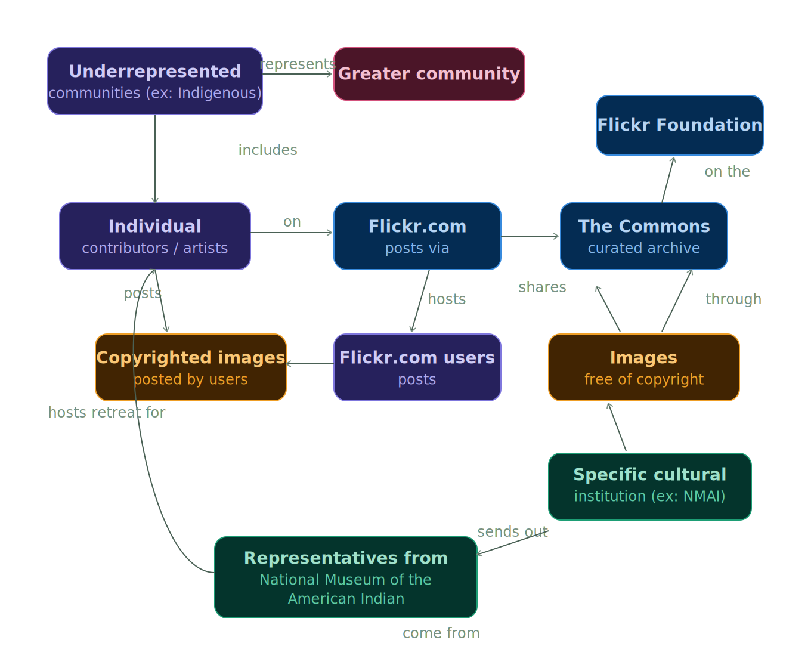

Approach. Connect. Trust. — a capstone research project examining who gets represented in the Flickr Commons, and why, sponsored by the Flickr Foundation.
The Flickr Commons partners with cultural institutions to host historical photo archives — but its collection development policy only asks institutions to "upload with awareness" and stay familiar with the C.A.R.E. data-sharing principles. There's no actual verification process behind that ask.
We wanted to know: how can the Flickr Foundation ensure that images partnering institutions upload are tagged and captioned ethically and accurately — especially photos of indigenous peoples and cultures?
Rather than take that question on faith, we did our own audit. A skim through several Commons archives showed many institutions hosting images from their own colonial past alongside images of their traditional cultures — raising real questions about how those photos were obtained and how they're captioned. We found existing examples already on the platform with vague, decontextualized labels — "A young Aboriginal man," "Portrait of a Fijian man" — names and context stripped out entirely.
Our first instinct, reflected in our draft proposal, was to design a verification framework — a process and a committee to check captions and tags for accuracy and cultural sensitivity before institutions could publish them. It was ambitious: a new governance layer for an existing platform with thousands of institutional partners.
As we kept researching, that framework started looking like the wrong unit of change. The deeper problem wasn't really verification — it was that individuals and underrepresented institutions had no real path into the Commons at all. A verification system would have policed a process that excluded the people it was meant to protect. So we narrowed scope: instead of a framework, we proposed a retreat model — a recurring, in-person event that connects individual contributors directly with cultural institutions, lowering the barrier to entry rather than adding another layer of process on top of it.

The Flickr A.C.T. retreat model is built around small, intentional gatherings rather than a platform feature:
We tested the concept with Ann from UW Digital Collections, a working professional in the cultural heritage space. She responded positively to the in-person retreat format — but her key piece of feedback reshaped the solution further: she pushed us to add a community guidelines agreement, signed by both the individual contributor and the institution, that explicitly addresses two questions before any content goes up — what the contributor expects for how their work is shared, and what concrete steps the institution will take to act on that.
This was one validation conversation with one professional, not a multi-round testing cycle. It's real, useful signal — but it's a single data point, and I'm naming it as such.
A few tensions we flagged in our own design rather than waiting for someone else to point them out:
The Flickr A.C.T. never moved past the concept stage — there's no built interest form, no retreat that's actually happened, and only one validating conversation behind the whole design. What I'd do differently with more time: test the interest form itself with a few individual contributors, not just one institutional partner, since the people we were trying to serve never actually weighed in directly. The project's real strength was the research question itself and the willingness to abandon our first idea (the verification framework) once it became clear it solved the wrong problem. That's a smaller, quieter version of the same judgment call I made on DawgRide — recognizing when the thing you started building isn't the thing that actually needs to exist.